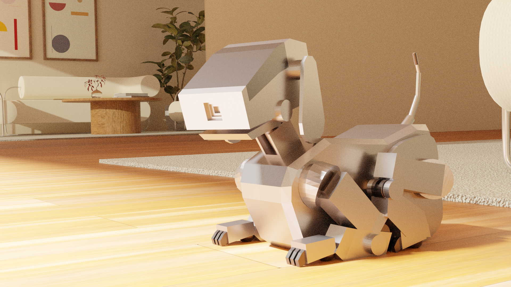
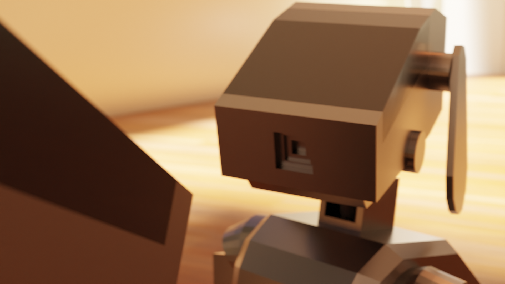

1998 Aibo Commercial (Fan Animated Recreation)
Character Modeling / Rigging / Animation / Camera Layout / Set Building / Lighting / Editing
Sony's 1998 AIBO entertainment robot commercial, reimagined in 4K with 3D animation.
This was my first experience with Blender's 3D animation workflow. The idea came from my childhood fascination with dog-shaped robots and my desire to see the original commercial in higher quality.
External materials and tutorials used:
- Original 1998 Aibo Commercial
- How to Make a Simple Realistic Interior in Blender
- Cassette music player
- High quality Sony outro
- How to Make a Simple Realistic Interior in Blender
- Cassette music player
- High quality Sony outro

